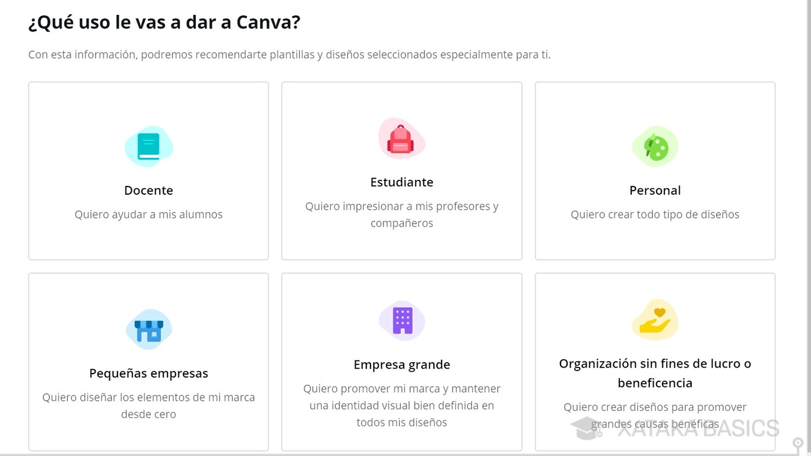

PAS 1
Busquem la web a Google: Escrivim “canva” a Google i accedim a la primera pàgina “https://www.canva.com/”.
PAS 2
Creem un nou usuari a partir del nostre correu gva.
És important utilitzar aquest correu perquè et permetrà accedir a les opcions premium, no disponibles amb el gmail.com?
- A la pàgina inicial de Canva seleccionem l’opció “Iniciar sessió", “registrarse”, després seleccionem “Continuar d’una altra manera” i finalment “usar mi correo”. Després d’introduir el correu has de pujar en continuar.
PAS 3
Ara hauràs de posar les dades personals que et demana. En primer lloc el teu nom. i punjaràs en CREAR CUENTA. Ara t’enviaran un codi al correu de gva que has posat. ● Introdueix el codi que t’han enviat i punja acceder.
PAS 4
Ara seleccionaràs que vas a utilitzar el canva com a estudiant. Deprés punjaràs a l’opció que estudies en un “centro de educación infantil, primària o secundaria”

PAS 5
Apareixerà una pantalla que diu “pásate gratis a canva para educación” i li has de punxar en VAMOS ALLÀ.
PAS 6
Eixirà una pantalla on “únete al resto de personas de tu centro educativo que ya usan canva” i hem de punjar en NO GRACIAS o buscar el IES Enric Soler i Godes.
PAS 7
Pantalla “danos algo más de información” Hem de posar on corresponga Nom, cognom, nom del centre educatiu, direcció del centre educatiu (Partida Ronda Sisena, Benifaió, España) i cliquem CONTINUAR.
PAS 8
A la pantalla et demanaran que verifiques que ets alumne del centre. has de pujar un document … i clicar en ENVIAR.
PAS 9:
Apareix una pantalla avisant-nos que han de verificar les dades i que en 7 dies tindrem accés a canva. Hem de clicar en LISTO.